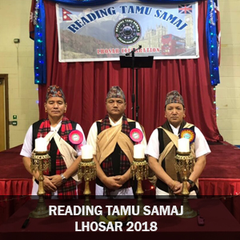

RTS Lhosar 2018

गत २२ डिसेम्बरको दिन रेडिङ तमु समाजले अाउदै गरेको फो ( मृग ) ल्होसार भब्य रूपमा मनायो !! रेडिङ बासि तमुहरूको साझा सस्था रेडङ तमु समाजले हरेक बर्ष मनाउने ल्होसार बर्ष पनि वायर हाउसको हलमा मनाईएको हो । समाजका महासचिव श्री देव तमु ले सन्चालन गर्नु भएको पहिलो चरणको अौपचारिक कार्यक्रम को अध्यक्षता समाजका नव नियुक्त अध्यक्ष श्री नन्द तमु ले गर्नु भएको थियो । प्रमुख अतिथि द्वय तमु धिँ युके का अध्यक्ष श्री ज्ञाम तमु र तमु प्ये ल्हु संघ यु के का अध्यक्ष रिटायर्ड मेजर खुशी मान तमु , अातिथ्यमा भएको कार्यक्रममा रेडिङ मा रहेका सबै संघ सस्थाका अध्यक्ष लगायत अन्य प्रतिनिधिहरू बिशेष अतिथिको रूपमा उपस्थित हुनु भएको थियो । कार्यक्रमको उद्घाटन समाजका अध्यक्ष , प्रमुख अतिथि द्वय नव गठित अामा समुहकि अध्यक्ष श्रीमती राज कुमारी तमुस्यो ले पानसमा दिप प्रज्वलन गरेर गर्नु भएको थियो र नेपाली र तमु राष्ट्रिय गित पनि बजाईएको थियो ।
साथैमा समाजका नव अाजिवन सदस्यहरू र सदस्यका उच्च शिक्षा हालिस गरेका बिधार्थीहरूलाई स्वागत सम्मान तथा शुभकामना दिईएको थियो । सोही कार्यक्रममा नव निर्वािचत अध्यक्ष श्री नन्द तमु लाई निवर्तमान अध्यक्ष श्री डम्बर तमुले अाफ्नो कार्यभार सुम्पने कार्य पनि गरियो । यसै क्रममा नव निर्वाचित अध्यक्षलाई स्वागत शुभकामना र सम्मान गरिएको थियो भने निवर्तमान अध्यक्ष श्री डम्बर तमुलाई कार्यकाल अत्यन्तै सफल पुर्वक सम्पन्न गर्नु भईकोमा धन्यवाद , बधाई तथा सम्मान गरिएको थियो । प्रमुख अतिथि द्वय श्री ज्ञाम तमु र मेजर खुशी मान तमु ले फो ल्हो को शुभ कामना मन्तब्य राख्नु भएको थियो। पहिलो चरणको अन्त्यमा अध्यक्ष श्री नन्द तमुले सबै उपस्थित सदस्यहरूहरू , अतिथिहरू, अतिथि कलाकारहरू स्थानिय कलाकारहरू र सहयोगि सदस्यहरू सबैलाई धन्यवाद दिनुु भएको थियो ।
दोस्रो चरणको साँस्कृतिक कार्यक्रम साँस्कृतिक सचिव श्री झुम प्रसाद तमुको संयोजनमा भएका थियो भने साउण्ड सिस्टममा श्री रूविन तमु र कोषाध्यक्ष श्री याम तमुले सहयोग गर्नुु भएको थियो । अतिथि कलाकार लोक दोहोरि गायक श्री मनसुधन थापा र गायिका श्रीमती कल्पना श्रीपाल ले बेजोड प्रस्तुति दिनु भएको थियो भने स्थानिय कलाकारहरूले नृत्य प्रस्तुत गरेका थिए।
कार्यक्रमलाई अतिथि कलाकार ख्याति प्राप्त लोक तथा दोहोरि गायिका कल्पना श्रीपाल सग समाजका अध्यक्ष श्री नन्द तमु र सदस्य श्री टीका राम तमुको प्रत्यक्ष दोहोरिले अझ रोचक बनाएको थियो भने बाध्यबादकमा कुसल बाध्यबादक श्री मीन तमु श्री बिनोद तमु श्री तुलसि राना र श्री पहल मान तमुले साथ दिनु भएको थियो । नव गठित अामा समाजका अध्ययक्ष श्रीमती राज कुमारि तमुस्यो र सकृृय सदस्य हरूले सन्चालन गर्नु भएको राफल चिठ्ठाले झनै रोचक बनाएको थियो भने राफल चिट्टालाई समाजका मनकारी पदाधिकारि ज्युु हरूले प्रायोजन गर्नु भएको थियो। जस मध्ये अामा समूह बाटै अाधी तोलाको सुन पहिलो परस्कार प्रायोजन गर्नु भएको थियो । यसरी सबैै रेडिङ बासि तमुहरूको बाक्लो उपस्थिति रहेको कार्यक्रममा खाना दिपक तमुले उपलब्ध गराउनु भएको थियो भने पेय पदार्थ भने समाजका सदस्य श्री टेक गुरूङको सकृयतामा सकृय सदस्य ज्यु हरूको सहयोगमा सुपथ मुल्ययमा उपलब्ध गराईएको थियो । यस फो ल्होसार कार्यक्रमको संयोजन भने नव निर्वािचत उपाध्यक्ष श्री रूद्र राज तमुले गर्नु भएको थियो ।
धन्यवाद!!
RELATED GALLERY
